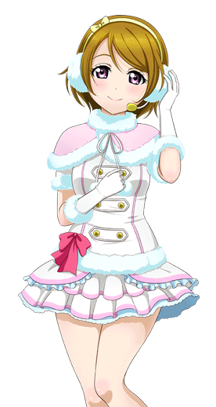
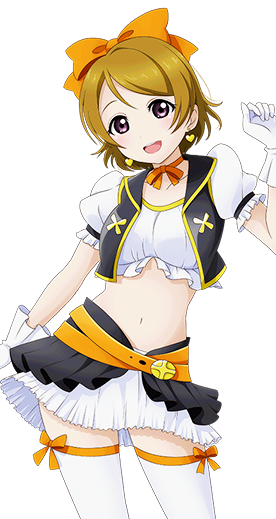
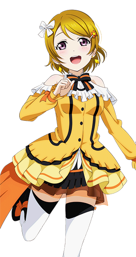

小泉 花阳
- 
- 
- 
小泉花阳，15岁，高中一年级。在班级内不怎么起眼，相当老实文静的女孩子。没什么自信，做什么都很容易放弃，是擅于听人讲话、不擅于跟人对谈的害羞内向少女。喜欢小孩子。憧憬着μ's，小时候曾当过婴儿模特儿，但因为性格缘故不敢主动加入，但在星空凛和西木野真姬的支持和引导下最终加入μ's。
自小学起便认识凛，和凛的关系非常好，无论何时都在一起，是凛的青梅竹马。非常喜欢白米饭，特别是秋季的新米，可以吃下一个巨大的饭团。在上学时会带两个便当，一个是中午吃的，另一个是肚子饿的时候吃的。在学校里担任饲养委员，负责照顾羊驼，和动物相处得很好。
刚开始时戴着一副棕色半框眼镜，在加入μ's之后改戴隐形眼镜。说谎的时候会有交叉手指的习惯。对于校园偶像有着不可思议的执着，只要提及有关于偶像的话题就会像变了个人似的，因此在三年级生毕业后继妮可担任偶像部的部长。